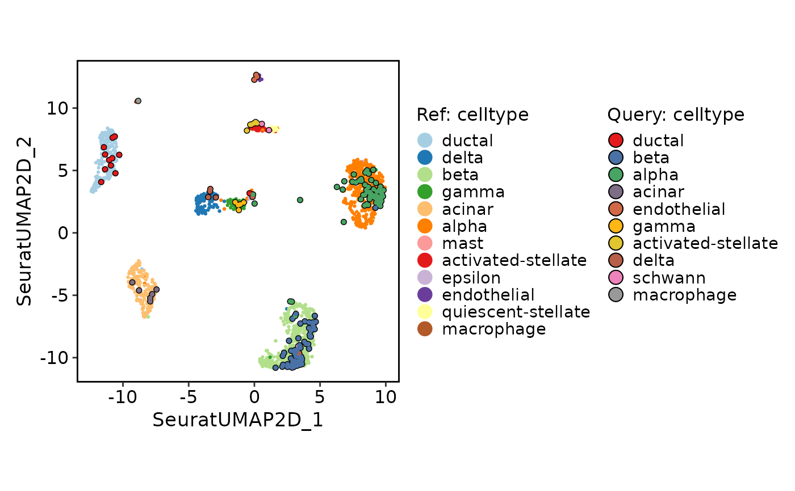
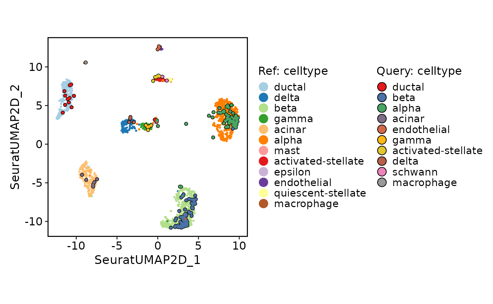

Single-cell reference mapping with Seurat method
Usage
RunSeuratMap(
srt_query,
srt_ref,
query_assay = NULL,
ref_pca = NULL,
ref_assay = srt_ref[[ref_pca]]@assay.used,
ref_dims = 1:30,
ref_umap = NULL,
ref_group = NULL,
normalization.method = "LogNormalize",
reduction_project_method = "pcaproject",
k.anchor = 5,
k.filter = 200,
k.score = 30,
k.weight = 100,
projection_method = c("model", "knn"),
nn_method = NULL,
k = 30,
distance_metric = "cosine",
vote_fun = "mean"
)Arguments
- srt_query
A Seurat object storing the query cells.
- srt_ref
A Seurat object storing the reference cells.
- query_assay
A character string specifying the assay name for the query cells. If not provided, the default assay for the query object will be used.
- ref_pca
A character string specifying the name of the PCA reduction in the reference object to use for calculating the distance metric.
- ref_assay
A character string specifying the assay name for the reference cells. If not provided, the default assay for the reference object will be used.
- ref_dims
A numeric vector specifying the dimension indices from the reference reduction to be used for calculating the distance metric.
- ref_umap
A character string specifying the name of the UMAP reduction in the reference object. If not provided, the first UMAP reduction found in the reference object will be used.
- ref_group
A character string specifying a metadata column name in the reference object to use for grouping.
- normalization.method
The normalization method to use. Default is `"LogNormalize"`.
- reduction_project_method
Dimensional reduction to perform when finding anchors. Default is `"pcaproject"`.
- k.anchor
How many neighbors (k) to use when finding anchors. Default is `5`.
- k.filter
How many neighbors (k) to use when filtering anchors. Set to NA to turn off filtering. Default is `200`.
- k.score
How many neighbors (k) to use when scoring anchors. Default is `30`.
- k.weight
Number of neighbors to consider when weighting anchors. Default is `100`.
- projection_method
A character string specifying the projection method to use. Options are "model" and "knn". If "model" is selected, the function will try to use a pre-trained UMAP model in the reference object for projection. If "knn" is selected, the function will directly find the nearest neighbors using the distance metric.
- nn_method
A character string specifying the nearest neighbor search method to use. Options are "raw", "annoy", and "rann". If "raw" is selected, the function will use the brute-force method to find the nearest neighbors. If "annoy" is selected, the function will use the Annoy library for approximate nearest neighbor search. If "rann" is selected, the function will use the RANN library for approximate nearest neighbor search. If not provided, the function will choose the search method based on the size of the query and reference datasets.
- k
A number of nearest neighbors to find for each cell in the query object.
- distance_metric
A character string specifying the distance metric to use for calculating the pairwise distances between cells. Options include: "pearson", "spearman", "cosine", "correlation", "jaccard", "ejaccard", "dice", "edice", "hamman", "simple matching", and "faith". Additional distance metrics can also be used, such as "euclidean", "manhattan", "hamming", etc.
- vote_fun
A character string specifying the function to be used for aggregating the nearest neighbors in the reference object. Options are "mean", "median", "sum", "min", "max", "sd", "var", etc. If not provided, the default is "mean".
Examples
data(panc8_sub)
panc8_sub <- standard_scop(panc8_sub)
#> StandardPC_ 1
#> Positive: CHGA, PCSK1N, G6PC2, PCSK1, IAPP, ARFGEF3, CRYBA2, PRUNE2, CDKN1C, SORL1
#> EDN3, CADM1, FXYD2, ELMO1, HADH, PAPPA2, GRIA3, RBP4, DLK1, ANXA6
#> HMGN2, GNAZ, AMPD2, IGF2, ROBO2, DNAJA4, PDK4, SEPT3, CD99L2, SYT17
#> Negative: IFITM3, ZFP36L1, SOX4, ANXA4, KRT7, TPM1, PMEPA1, SERPING1, TM4SF1, CD44
#> CDC42EP1, TMSB10, NFIB, SAT1, SDC4, SPTBN1, LCN2, KRT18, PDZK1IP1, MSN
#> SMAD3, CLDN10, CFTR, NOTCH2, KRT19, CTSH, SERPINA5, FLRT2, C3, EPS8
#> StandardPC_ 2
#> Positive: SPARC, COL4A1, COL15A1, COL1A2, COL3A1, PXDN, PDGFRB, COL5A1, BGN, COL5A2
#> COL1A1, LAMA4, TIMP3, COL6A2, IGFBP4, AEBP1, SFRP2, THBS2, FBN1, COL6A1
#> CDH11, VCAN, SERPINE1, WNT5A, FN1, TPM2, FMOD, MMP2, SNAI1, DCN
#> Negative: KRT8, SPINK1, PRSS1, ELF3, GATM, MUC1, KRT18, CPA2, CTRB1, SDC4
#> PRSS3, CLDN4, LCN2, ANPEP, CPA1, PDZK1IP1, PLA2G1B, CTRC, CPB1, PNLIP
#> KLK1, CELA2A, CELA3A, KRT7, GSTA1, CD44, PNLIPRP1, PNLIPRP2, CELA3B, GSTA2
#> StandardPC_ 3
#> Positive: FTO, SORL1, TBC1D24, CASR, PCYOX1, UTRN, ADH5, ENPP5, RNF14, PHKB
#> MAP1A, C2CD5, TTC17, RAB22A, PRR14L, AP3B1, MTR, HERC1, EXPH5, SMCHD1
#> ROBO1, ABHD10, PRUNE2, SPEN, BTBD3, IBTK, ARFGEF2, TSC1, PARP4, RMND5A
#> Negative: HSPB1, CELA3A, CELA3B, CLPS, CTRB1, SYCN, CELA2A, EIF4A1, VIM, PNLIPRP1
#> PLA2G1B, KLK1, CPA1, CTRC, DDIT4, PLTP, BGN, DYNLL2, ANGPTL4, COL6A2
#> IFITM1, IGFBP4, IGFBP2, TMSB10, PRSS1, CTRL, PDGFRB, CPA2, PRSS3, PXDN
#> StandardPC_ 4
#> Positive: CPA2, PNLIP, PRSS1, CTRC, CPA1, CPB1, PLA2G1B, PNLIPRP2, PRSS3, BCAT1
#> CEL, KLK1, CELA2A, CTRB1, PNLIPRP1, SPINK1, GSTA2, MGST1, CELA3A, LDHB
#> ALB, CTRL, CELA3B, CLPS, ALDOB, REG3G, FAM129A, GSTA1, SYCN, CBS
#> Negative: CFTR, MMP7, KRT19, SERPINA5, TINAGL1, AQP1, SPP1, SERPING1, PMEPA1, KRT23
#> ALDH1A3, TSPAN8, PROM1, IGFBP7, VCAM1, LGALS4, ONECUT2, TRPV6, CCL2, ANXA3
#> TNFAIP2, CTSH, SDC1, SLC3A1, CLDN10, ANXA9, CCND1, KRT80, VNN1, PDGFD
#> StandardPC_ 5
#> Positive: COL5A1, COL1A2, COL1A1, SFRP2, COL5A2, COL3A1, VCAN, FN1, PDGFRB, THBS2
#> FMOD, BGN, ANTXR1, MXRA8, COL6A1, AEBP1, TPM2, CDH11, DCN, ISLR
#> TGFB3, COL6A2, LTBP2, DDR2, EDNRA, ANO1, LTBP1, GFPT2, WNT5A, HEYL
#> Negative: CD93, PLVAP, PODXL, ACVRL1, ESAM, S1PR1, CXCR4, ECSCR, DYSF, CALCRL
#> ADGRF5, STC1, CD34, AFAP1L1, IFI27, SH3BP5, ACKR3, ANGPT2, DLL4, MMRN2
#> MCAM, PNP, IL3RA, SPARCL1, TCF4, FAM198B, RAPGEF5, ARHGAP31, P2RY6, F2RL3
srt_ref <- panc8_sub[, panc8_sub$tech != "fluidigmc1"]
srt_query <- panc8_sub[, panc8_sub$tech == "fluidigmc1"]
srt_ref <- integration_scop(
srt_ref,
batch = "tech",
integration_method = "Uncorrected"
)
CellDimPlot(srt_ref, group.by = c("celltype", "tech"))
 # Projection
srt_query <- RunSeuratMap(
srt_query = srt_query,
srt_ref = srt_ref,
ref_pca = "Uncorrectedpca",
ref_umap = "UncorrectedUMAP2D",
k.weight = 50
)
#> Projecting cell embeddings
#> Finding neighborhoods
#> Finding anchors
#> Found 471 anchors
#> Filtering anchors
#> Retained 471 anchors
#> Requested to reuse weights matrix, but no weights found. Computing new weights.
#>
#> Integrating dataset 2 with reference dataset
#> Finding integration vectors
#> Finding integration vector weights
#> Integrating data
ProjectionPlot(
srt_query = srt_query,
srt_ref = srt_ref,
query_group = "celltype",
ref_group = "celltype"
)
#> Scale for x is already present.
#> Adding another scale for x, which will replace the existing scale.
#> Scale for y is already present.
#> Adding another scale for y, which will replace the existing scale.

# Projection
srt_query <- RunSeuratMap(
srt_query = srt_query,
srt_ref = srt_ref,
ref_pca = "Uncorrectedpca",
ref_umap = "UncorrectedUMAP2D",
k.weight = 50
)
#> Projecting cell embeddings
#> Finding neighborhoods
#> Finding anchors
#> Found 471 anchors
#> Filtering anchors
#> Retained 471 anchors
#> Requested to reuse weights matrix, but no weights found. Computing new weights.
#>
#> Integrating dataset 2 with reference dataset
#> Finding integration vectors
#> Finding integration vector weights
#> Integrating data
ProjectionPlot(
srt_query = srt_query,
srt_ref = srt_ref,
query_group = "celltype",
ref_group = "celltype"
)
#> Scale for x is already present.
#> Adding another scale for x, which will replace the existing scale.
#> Scale for y is already present.
#> Adding another scale for y, which will replace the existing scale.
